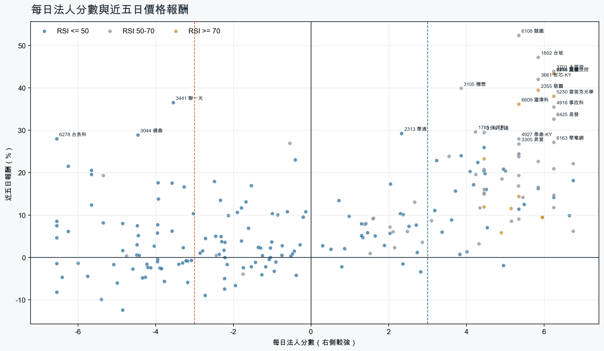
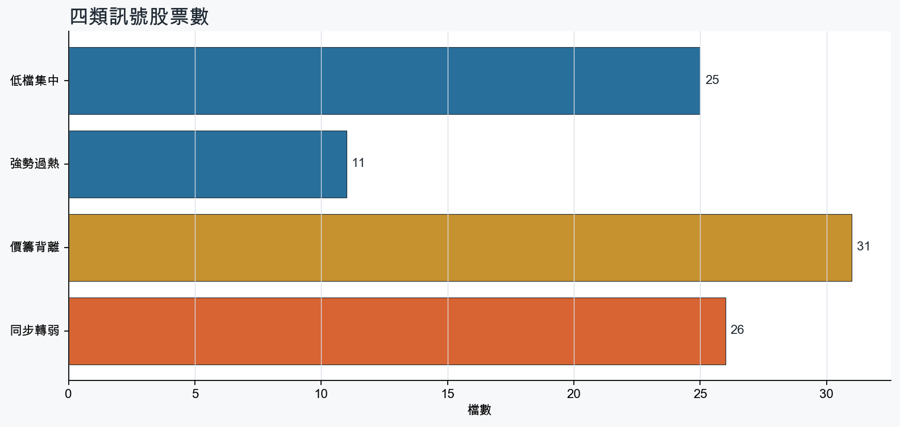
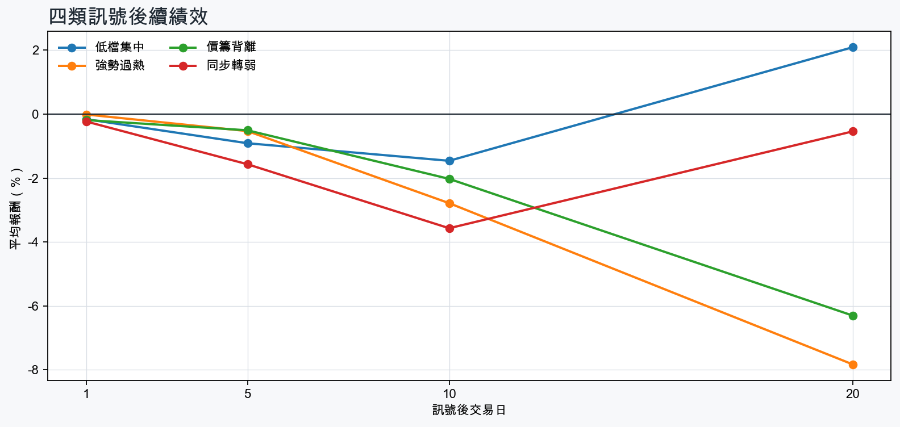

市場情緒偏多
近5日法人合計-484,851 張
篩選池上漲比例78.6%
籌碼好 / RSI低15 檔
籌碼差 / 價跌15 檔



EPS × PE VALUATION
法人常用的相對估值
顯示保守、基準與樂觀估值帶，不把單一數字包裝成精準目標價。
最新累計 EPS 依季數年化 × 同產業有效 P/E 的 Q25／中位數／Q75。排除本公司、非正 P/E，並以 1.5×IQR 排除離群值。估值帶是公開資料篩選值，不是法人目標價；未使用分析師預估 EPS。
MOOD × MONEY
情緒與籌碼雷達
熱度代表被討論程度；情緒分與法人方向分開計算。熱門不等於適合追價，樣本不足也不硬判多空。
| 股票 | 情緒 | 討論熱度 | 情緒 × 籌碼 | 情緒 × 基本面 |
|---|---|---|---|---|
| 2316 楠梓電價籌背離 | 情緒高漲 +74.7信心 94 | 1001 篇 / 98 留言 / 3 則新聞 | 熱門但法人撤退法人分 -6.2 | 基本面與情緒共振基本面分 +1.8 |
| 2382 廣達同步轉弱 | 情緒高漲 +68.3信心 68 | 851 篇 / 41 留言 / 3 則新聞 | 熱門但法人撤退法人分 -4.3 | 基本面與情緒共振基本面分 +3.0 |
| 2355 敬鵬強勢過熱 | 偏多 +32.8信心 68 | 712 篇 / 7 留言 / 3 則新聞 | 情籌共振法人分 +5.8 | 基本面與情緒共振基本面分 +3.0 |
| 3189 景碩同步轉弱 | 偏多 +33.9信心 56 | 701 篇 / 11 留言 / 3 則新聞 | 熱門但法人撤退法人分 -4.0 | 基本面與情緒共振基本面分 +3.6 |
| 6274 台燿價籌背離 | 中性分歧 +0.0信心 36 | 641 篇 / 11 留言 / 1 則新聞 | 情籌混合法人分 -4.5 | 基本面與情緒分歧基本面分 +3.6 |
| 2356 英業達同步轉弱 | 偏多 +29.7信心 30 | 490 篇 / 0 留言 / 3 則新聞 | 熱門但法人撤退法人分 -4.8 | 基本面與情緒共振基本面分 +3.0 |
| 2376 技嘉同步轉弱 | 偏多 +29.7信心 30 | 490 篇 / 0 留言 / 3 則新聞 | 熱門但法人撤退法人分 -6.4 | 基本面與情緒共振基本面分 +2.0 |
| 3005 神基同步轉弱 | 偏多 +29.7信心 30 | 490 篇 / 0 留言 / 3 則新聞 | 熱門但法人撤退法人分 -5.0 | 基本面與情緒共振基本面分 +1.4 |
| 2324 仁寶同步轉弱 | 偏多 +29.7信心 30 | 490 篇 / 0 留言 / 3 則新聞 | 熱門但法人撤退法人分 -5.8 | 基本面與情緒共振基本面分 +2.0 |
| 3044 健鼎價籌背離 | 偏多 +29.7信心 30 | 490 篇 / 0 留言 / 3 則新聞 | 熱門但法人撤退法人分 -4.5 | 基本面與情緒共振基本面分 +3.6 |
| 6278 台表科價籌背離 | 中性分歧 +0.0信心 30 | 490 篇 / 0 留言 / 3 則新聞 | 情籌混合法人分 -6.5 | 基本面與情緒分歧基本面分 +2.4 |
| 8150 南茂價籌背離 | 中性分歧 +0.0信心 30 | 490 篇 / 0 留言 / 3 則新聞 | 情籌混合法人分 -5.7 | 基本面與情緒分歧基本面分 +3.6 |
01
籌碼好 / RSI低
優先研究基本面；法人續買且價格止穩時，才適合分批觀察。
| 股票 / 確認狀態 | 每日法人分 | 浦男式近似 | 法人加速度 | RSI / 相對強弱 | 量價確認 | 融資融券 | 每週集保確認 | 基本面 | EPS × 同業 P/E 估值 | 情緒 / 情籌 | 近期消息 | 論壇討論 |
|---|---|---|---|---|---|---|---|---|---|---|---|---|
| 5469 瀚宇博可研究 · 100 分籌碼與價格確認，可列研究清單 | +4.3法人 +2,840 張 / 5 天 | 命中 · 100站上月線；中期均線偏多；法人籌碼偏多 | +1,182 張近3日 +1,773 / 連續 +5 日 | 47.7相對大盤 +5.7% | 量比 0.95確認分 +5.9價格、量能與籌碼未見明顯弱項 | -%融資 - 張 / 融券 - 張 | -0.51 pp1000張 -0.49 pp | 單月營收年增 +65.2%；累計營收年增 +30.4%；2026 Q3 累計 EPS 4.07仍需觀察下一期財報延續性來源：公開資訊觀測站 | 基準 NT$ 117.3估值帶 81.89–178.0現價 78.00 · 低於估值帶 · 距基準 +50.4%2026 Q3 累計 EPS 4.07 → 年化 5.43電子零組件同業 P/E 15.09／21.61／32.80 · n=140 · 信心較高以 Q3 累計 EPS 年化，不等同分析師全年預估來源：TWSE／TPEx 每日本益比 | 樣本不足 +0.0熱度 29 / 信心 10情緒樣本不足 | 財報：瀚宇博(5469)115年前三季稅後盈餘19億7790萬元，EPS 4.07元富聯網 · 11/13 | 近期沒有明確提及本股的論壇樣本 |
| 2379 瑞昱可研究 · 97 分籌碼與價格確認，可列研究清單 | +4.5法人 +2,311 張 / 5 天 | 接近 · 85中期均線偏多；法人籌碼偏多；法人買盤加速；留意未站月線、量能尚未確認 | +829 張近3日 +1,677 / 連續 +6 日 | 46.9相對大盤 +9.4% | 量比 0.87確認分 +3.8收盤跌破20日線 | -%融資 - 張 / 融券 - 張 | +0.05 pp1000張 +0.69 pp | 單月營收年增 +32.1%；累計營收年增 +17.2%；2026 Q3 累計 EPS 23.91仍需觀察下一期財報延續性來源：公開資訊觀測站 | 基準 NT$ 688.6估值帶 444.7–1,079現價 758.0 · 估值帶內 · 距基準 -9.2%2026 Q3 累計 EPS 23.91 → 年化 31.88半導體同業 P/E 13.95／21.60／33.86 · n=153 · 信心較高以 Q3 累計 EPS 年化，不等同分析師全年預估來源：TWSE／TPEx 每日本益比 | 樣本不足 +9.9熱度 29 / 信心 10情緒樣本不足 | 《投信買超7-6》富世達(135)、瑞昱(133)、興富發(132)富聯網 · 11/13 | 近期沒有明確提及本股的論壇樣本 |
| 2034 允強可研究 · 97 分籌碼與價格確認，可列研究清單 | +3.6法人 +3,398 張 / 4 天 | 接近 · 86中期均線偏多；法人籌碼偏多；法人買盤加速；留意未站月線、動能位置非最佳 | +1,743 張近3日 +2,579 / 連續 -1 日 | 43.7相對大盤 +11.0% | 量比 1.24確認分 +4.5收盤跌破20日線 | -%融資 - 張 / 融券 - 張 | +1.10 pp1000張 +0.74 pp | 單月營收年增 +99.8%；累計營收年增 +11.4%；2026 Q3 累計 EPS 0.542026 Q3 累計營益率 4.8%來源：公開資訊觀測站 | 基準 NT$ 8.15估值帶 6.85–10.61現價 23.40 · 高於估值帶 · 距基準 -65.2%2026 Q3 累計 EPS 0.54 → 年化 0.72鋼鐵工業同業 P/E 9.52／11.32／14.73 · n=31 · 信心較高以 Q3 累計 EPS 年化，不等同分析師全年預估來源：TWSE／TPEx 每日本益比 | 樣本不足 +0.0熱度 0 / 信心 0情緒樣本不足 | 近期沒有通過股票語境篩選的新聞 | 近期沒有明確提及本股的論壇樣本 |
| 4716 大立等待確認 · 100 分先等基本面止穩 | +6.2法人 +3,691 張 / 5 天 | 接近 · 80站上月線；中期均線偏多；法人籌碼偏多；留意量能尚未確認、基本面偏弱 | +3,434 張近3日 +3,657 / 連續 +6 日 | 48.4相對大盤 +15.2% | 量比 2.65確認分 +6.3價格、量能與籌碼未見明顯弱項 | -3.1%融資 -386 張 / 融券 +73 張 | +3.84 pp1000張 +1.79 pp | 尚無明確成長訊號單月營收年增 -16.2%；累計營收年增 -1.9%；2026 Q3 累計 EPS -0.07來源：公開資訊觀測站 | 不適用年化 EPS 非正數，不適合使用本益比估值 | 中性分歧 +0.0熱度 49 / 信心 30情籌混合 | 快訊／聯發科、大立光衝漲停！台股開高飆近1300點台積電站回月線| 金融非凡新聞台 · 11/13黃仁勳風波衝擊有限！大立光飆505元攻漲停 光電6檔亮燈 分析師：等拉回再布局Yahoo股市 · 11/13 | 近期沒有明確提及本股的論壇樣本 |
| 5388 中磊等待確認 · 88 分籌碼有訊號，但價格尚未確認 | +6.7法人 +2,970 張 / 5 天 | 接近 · 66法人籌碼偏多；法人買盤加速；買超具延續性；留意未站月線、中期均線未翻多 | +2,122 張近3日 +2,668 / 連續 +7 日 | 42.7相對大盤 +5.0% | 量比 0.47確認分 +0.9收盤跌破20日線；20日線低於60日線；成交量不足 | -%融資 - 張 / 融券 - 張 | -0.23 pp1000張 -1.46 pp | 單月營收年增 +63.6%；累計營收年增 +55.2%；2026 Q3 累計 EPS 4.342026 Q3 累計營益率 3.4%來源：公開資訊觀測站 | 基準 NT$ 127.8估值帶 82.92–313.2現價 70.90 · 低於估值帶 · 距基準 +80.3%2026 Q3 累計 EPS 4.34 → 年化 5.79通信網路同業 P/E 14.33／22.09／54.12 · n=62 · 信心中等以 Q3 累計 EPS 年化，不等同分析師全年預估來源：TWSE／TPEx 每日本益比 | 樣本不足 +0.0熱度 0 / 信心 0情緒樣本不足 | 近期沒有通過股票語境篩選的新聞 | 近期沒有明確提及本股的論壇樣本 |
| 5314 世紀*等待確認 · 90 分籌碼有訊號，但價格尚未確認 | +5.0法人 +10,967 張 / 4 天 | 接近 · 85站上月線；法人籌碼偏多；法人買盤加速；留意中期均線未翻多、量能尚未確認 | +6,802 張近3日 +9,905 / 連續 +4 日 | 50.0相對大盤 +11.4% | 量比 2.59確認分 +3.620日線低於60日線；融資單日增幅偏高 | +5.5%融資 +1,003 張 / 融券 +17 張 | -1.42 pp1000張 -1.90 pp | 單月營收年增 +50.7%；累計營收年增 +121.0%仍需觀察下一期財報延續性來源：公開資訊觀測站 | 不適用最新財報缺少可年化 EPS | 中性分歧 +0.0熱度 41 / 信心 20情籌混合 | 【11:45 即時新聞】世紀*(5314)盤中強漲近一成，MSCI題材成市場焦點CMoney投資網誌 · 11/135314 世紀* - 之前追蹤我的這支我沒有賣喔本來+500多萬～有圖為憑- 股市爆料同學會CMoney · 11/13 | 近期沒有明確提及本股的論壇樣本 |
| 3006 晶豪科等待確認 · 86 分籌碼有訊號，但價格尚未確認 | +5.5法人 +2,712 張 / 4 天 | 接近 · 75法人籌碼偏多；法人買盤加速；買超具延續性；留意未站月線、中期均線未翻多 | +6,119 張近3日 +4,910 / 連續 +3 日 | 49.9相對大盤 +12.2% | 量比 0.77確認分 +2.2收盤跌破20日線；20日線低於60日線 | -%融資 - 張 / 融券 - 張 | -3.59 pp1000張 -3.47 pp | 單月營收年增 +430.1%；累計營收年增 +353.6%；2026 Q3 累計 EPS 64.54仍需觀察下一期財報延續性來源：公開資訊觀測站 | 基準 NT$ 1,883估值帶 1,211–2,914現價 233.5 · 低於估值帶 · 距基準 +706.4%2026 Q3 累計 EPS 64.54 → 年化 86.05半導體同業 P/E 14.07／21.88／33.86 · n=153 · 信心較高以 Q3 累計 EPS 年化，不等同分析師全年預估來源：TWSE／TPEx 每日本益比 | 樣本不足 +0.0熱度 0 / 信心 0情緒樣本不足 | 近期沒有通過股票語境篩選的新聞 | 近期沒有明確提及本股的論壇樣本 |
| 2464 盟立等待確認 · 81 分籌碼有訊號，但價格尚未確認 | +6.8法人 +4,006 張 / 5 天 | 接近 · 70法人籌碼偏多；法人買盤加速；買超具延續性；留意未站月線、中期均線未翻多 | +724 張近3日 +2,707 / 連續 +6 日 | 49.3相對大盤 +0.8% | 量比 0.77確認分 +0.5收盤跌破20日線；20日線低於60日線 | -%融資 - 張 / 融券 - 張 | -3.29 pp1000張 -2.61 pp | 單月營收年增 +96.0%；累計營收年增 +42.7%；2026 Q3 累計 EPS 3.572026 Q3 累計營益率 4.9%來源：公開資訊觀測站 | 基準 NT$ 86.01估值帶 62.31–128.1現價 159.5 · 高於估值帶 · 距基準 -46.1%2026 Q3 累計 EPS 3.57 → 年化 4.76其他電子同業 P/E 13.09／18.07／26.91 · n=67 · 信心較高以 Q3 累計 EPS 年化，不等同分析師全年預估來源：TWSE／TPEx 每日本益比 | 偏多 +29.7熱度 49 / 信心 30情籌共振 | 營收速報 - 盟立(2464)10月營收11.05億元年增率高達96％｜新聞快訊｜豐雲學堂永豐金證券 · 11/10盟立Q3 EPS 2.81元 走出谷底UDN · 11/10 | 近期沒有明確提及本股的論壇樣本 |
| 1809 中釉等待確認 · 80 分籌碼有訊號，但價格尚未確認 | +5.8法人 +2,840 張 / 4 天 | 接近 · 75站上月線；中期均線偏多；法人籌碼偏多；留意法人買盤未加速、量能異常 | -447 張近3日 +1,365 / 連續 +2 日 | 46.9相對大盤 +19.9% | 量比 0.53確認分 +1.1成交量不足；法人買盤減速 | -%融資 - 張 / 融券 - 張 | +0.03 pp1000張 +0.00 pp | 2026 Q3 累計 EPS 0.12單月營收年增 -3.3%；累計營收年增 -1.2%；2026 Q3 累計營益率 0.6%來源：公開資訊觀測站 | 不適用同產業有效 P/E 樣本不足（3 檔） | 樣本不足 +0.0熱度 0 / 信心 0情緒樣本不足 | 近期沒有通過股票語境篩選的新聞 | 近期沒有明確提及本股的論壇樣本 |
| 2328 廣宇等待確認 · 67 分籌碼有訊號，但價格尚未確認 | +5.3法人 +5,424 張 / 4 天 | 接近 · 61中期均線偏多；法人籌碼偏多；買超具延續性；留意未站月線、法人買盤未加速 | -2,620 張近3日 +1,004 / 連續 +2 日 | 40.4相對大盤 +9.2% | 量比 0.57確認分 -2.4收盤跌破20日線；成交量不足；法人買盤減速 | -%融資 - 張 / 融券 - 張 | +3.36 pp1000張 +2.72 pp | 單月營收年增 +27.8%累計營收年增 -0.7%來源：公開資訊觀測站 | 不適用最新財報缺少可年化 EPS | 樣本不足 +0.0熱度 29 / 信心 10情緒樣本不足 | 財報：廣宇(2328)115/01/01-115/09/30歸屬母公司淨利1800萬元，EPS 0.03元富聯網 · 11/13 | 近期沒有明確提及本股的論壇樣本 |
| 6456 GIS-KY等待確認 · 92 分先等基本面止穩 | +4.5法人 +22,909 張 / 3 天 | 接近 · 85站上月線；中期均線偏多；法人籌碼偏多；留意基本面偏弱 | +21,036 張近3日 +20,245 / 連續 -1 日 | 49.7相對大盤 +24.6% | 量比 1.88確認分 +6.5價格、量能與籌碼未見明顯弱項 | -%融資 - 張 / 融券 - 張 | -1.98 pp1000張 -2.65 pp | 單月營收年增 +167.5%累計營收年增 -1.8%；2026 Q3 累計 EPS -5.93；2026 Q3 累計營益率 -4.3%來源：公開資訊觀測站 | 不適用年化 EPS 非正數，不適合使用本益比估值 | 偏多 +29.7熱度 49 / 信心 30情籌共振 | GIS-KY雷射封裝Q4量產，台/越產能2027年陸續開出台視全球資訊網 · 11/13熱門股》題材先行 GIS-KY連3根漲停自由財經 · 11/13 | 近期沒有明確提及本股的論壇樣本 |
| 2363 矽統等待確認 · 72 分籌碼有訊號，但價格尚未確認 | +4.1法人 +2,885 張 / 4 天 | 接近 · 80法人籌碼偏多；法人買盤加速；買超具延續性；留意未站月線、中期均線未翻多 | +228 張近3日 +1,481 / 連續 +2 日 | 45.8相對大盤 +3.3% | 量比 1.65確認分 +0.4收盤跌破20日線；20日線低於60日線 | -%融資 - 張 / 融券 - 張 | -1.89 pp1000張 -1.53 pp | 單月營收年增 +76.4%；累計營收年增 +76.3%；2026 Q3 累計 EPS 1.652026 Q3 累計營益率 3.7%來源：公開資訊觀測站 | 基準 NT$ 47.52估值帶 30.69–74.49現價 50.10 · 估值帶內 · 距基準 -5.2%2026 Q3 累計 EPS 1.65 → 年化 2.20半導體同業 P/E 13.95／21.60／33.86 · n=153 · 信心較高以 Q3 累計 EPS 年化，不等同分析師全年預估來源：TWSE／TPEx 每日本益比 | 樣本不足 +0.0熱度 29 / 信心 10情緒樣本不足 | 【12:45 即時新聞】矽統(2363) 股價走強，法人買盤延續成盤中焦點CMoney投資網誌 · 11/13 | 近期沒有明確提及本股的論壇樣本 |
| 3605 宏致等待確認 · 56 分籌碼有訊號，但價格尚未確認 | +5.0法人 +4,690 張 / 3 天 | 接近 · 58中期均線偏多；法人籌碼偏多；買超具延續性；留意未站月線、法人買盤未加速 | -5,285 張近3日 -295 / 連續 -1 日 | 32.8相對大盤 -17.0% | 量比 1.09確認分 -5.0收盤跌破20日線；近20日弱於大盤；法人買盤減速 | -%融資 - 張 / 融券 - 張 | +1.19 pp1000張 +2.26 pp | 單月營收年增 +19.0%；累計營收年增 +17.9%；2026 Q3 累計 EPS 3.312026 Q3 累計營益率 6.9%來源：公開資訊觀測站 | 基準 NT$ 94.53估值帶 65.85–144.3現價 127.5 · 估值帶內 · 距基準 -25.9%2026 Q3 累計 EPS 3.31 → 年化 4.41電子零組件同業 P/E 14.92／21.42／32.70 · n=140 · 信心較高以 Q3 累計 EPS 年化，不等同分析師全年預估來源：TWSE／TPEx 每日本益比 | 偏多 +19.8熱度 41 / 信心 20情籌混合 | 3605 宏致- Bloom Energy 擴產帶動商機，康舒、高力、宏致10 月營收齊揚- 股市爆料同學會CMoney · 11/11《外資買超24-6》台灣大(1979)、宏致(1976)、邁達特(1956)富聯網 · 11/13 | 近期沒有明確提及本股的論壇樣本 |
| 0052 富邦科技等待確認 · 70 分籌碼有訊號，但價格尚未確認 | +3.2法人 +14,978 張 / 3 天 | 接近 · 68法人籌碼偏多；法人買盤加速；買超具延續性；留意未站月線、中期均線未翻多 | +45,241 張近3日 +21,193 / 連續 +3 日 | 43.3相對大盤 +3.7% | 量比 1.03確認分 +1.9收盤跌破20日線；20日線低於60日線 | -%融資 - 張 / 融券 - 張 | -0.79 pp1000張 -0.95 pp | 尚無明確成長訊號仍需觀察下一期財報延續性來源：公開資訊觀測站 | 不適用最新財報缺少可年化 EPS | 樣本不足 +9.9熱度 29 / 信心 10情緒樣本不足 | 掌握台灣科技成長動能0052 富邦科技ETF聚焦產業龍頭| 理財非凡新聞台 · 11/13 | 近期沒有明確提及本股的論壇樣本 |
| 6244 茂迪等待確認 · 64 分籌碼有訊號，但價格尚未確認 | +3.8法人 +3,274 張 / 3 天 | 接近 · 73站上月線；法人籌碼偏多；買超具延續性；留意中期均線未翻多、法人買盤未加速 | -4,682 張近3日 -549 / 連續 -1 日 | 48.7相對大盤 +7.9% | 量比 0.54確認分 -0.420日線低於60日線；成交量不足；法人買盤減速 | -1.3%融資 -169 張 / 融券 +1 張 | -2.65 pp1000張 -2.86 pp | 單月營收年增 +0.4%；累計營收年增 +11.0%；2026 Q3 累計 EPS 0.622026 Q3 累計營益率 6.8%來源：公開資訊觀測站 | 基準 NT$ 19.25估值帶 10.32–26.67現價 21.00 · 估值帶內 · 距基準 -8.3%2026 Q3 累計 EPS 0.62 → 年化 0.83光電同業 P/E 12.48／23.29／32.26 · n=70 · 信心較高以 Q3 累計 EPS 年化，不等同分析師全年預估來源：TWSE／TPEx 每日本益比 | 樣本不足 +0.0熱度 0 / 信心 0情緒樣本不足 | 近期沒有通過股票語境篩選的新聞 | 近期沒有明確提及本股的論壇樣本 |
02
籌碼好 / RSI高
趨勢強但不追價，等待量縮、RSI降溫或回測支撐。
| 股票 / 確認狀態 | 每日法人分 | 浦男式近似 | 法人加速度 | RSI / 相對強弱 | 量價確認 | 融資融券 | 每週集保確認 | 基本面 | EPS × 同業 P/E 估值 | 情緒 / 情籌 | 近期消息 | 論壇討論 |
|---|---|---|---|---|---|---|---|---|---|---|---|---|
| 2465 麗臺等待拉回 · 100 分等拉回，不追價 | +6.2法人 +8,881 張 / 5 天 | 命中 · 91站上月線；中期均線偏多；法人籌碼偏多；留意量能尚未確認、動能位置非最佳 | +5,611 張近3日 +7,387 / 連續 +7 日 | 77.3相對大盤 +103.7% | 量比 2.63確認分 +5.8價格、量能與籌碼未見明顯弱項 | -%融資 - 張 / 融券 - 張 | +7.25 pp1000張 +1.18 pp | 單月營收年增 +340.6%；累計營收年增 +125.2%；2026 Q3 累計 EPS 6.82仍需觀察下一期財報延續性來源：公開資訊觀測站 | 基準 NT$ 133.2估值帶 99.75–172.3現價 162.0 · 估值帶內 · 距基準 -17.8%2026 Q3 累計 EPS 6.82 → 年化 9.09電腦及週邊同業 P/E 10.97／14.65／18.95 · n=80 · 信心較高以 Q3 累計 EPS 年化，不等同分析師全年預估來源：TWSE／TPEx 每日本益比 | 中性分歧 +0.0熱度 49 / 信心 30情籌混合 | 2465 麗臺 - 為了不關廁所 只好反覆洗盤 畢竟沒有爆量 期待下週啟航... - 股市爆料同學會CMoney · 11/13【量大強漲股整理】輝達震撼彈！資金大逃亡？繼GPU 【2465 麗臺】+122% 、【6150撼訊】+32% 資安【6112邁達特】+24%，下一波換誰表現?鉅亨網 · 11/13 | 近期沒有明確提及本股的論壇樣本 |
| 2618 長榮航等待拉回 · 100 分等拉回，不追價 | +6.0法人 +74,724 張 / 5 天 | 命中 · 96站上月線；中期均線偏多；法人籌碼偏多；留意動能位置非最佳 | +15,027 張近3日 +46,995 / 連續 +10 日 | 74.9相對大盤 +20.1% | 量比 1.29確認分 +6.5價格、量能與籌碼未見明顯弱項 | -%融資 - 張 / 融券 - 張 | +1.75 pp1000張 +1.80 pp | 單月營收年增 +22.6%；累計營收年增 +19.8%；2026 Q3 累計 EPS 3.50仍需觀察下一期財報延續性來源：公開資訊觀測站 | 基準 NT$ 45.08估值帶 36.54–63.51現價 47.75 · 估值帶內 · 距基準 -5.6%2026 Q3 累計 EPS 3.50 → 年化 4.67航運業同業 P/E 7.83／9.66／13.61 · n=26 · 信心較高以 Q3 累計 EPS 年化，不等同分析師全年預估來源：TWSE／TPEx 每日本益比 | 偏多 +29.7熱度 49 / 信心 30情籌共振 | 星宇10月營收創高仍虧6.38億！長榮航、華航大賺 航空三雄獲利兩樣情Yahoo股市 · 11/11華航、長榮航Q4獲利可期- 日報工商時報 · 11/12 | 近期沒有明確提及本股的論壇樣本 |
| 1416 廣豐等待拉回 · 100 分等拉回，不追價 | +4.5法人 +4,599 張 / 3 天 | 命中 · 96站上月線；中期均線偏多；法人籌碼偏多；留意動能位置非最佳 | +1,720 張近3日 +3,491 / 連續 -2 日 | 75.9相對大盤 +48.3% | 量比 1.48確認分 +6.5價格、量能與籌碼未見明顯弱項 | -%融資 - 張 / 融券 - 張 | +2.92 pp1000張 +2.29 pp | 單月營收年增 +45.5%；累計營收年增 +47.3%；2026 Q3 累計 EPS 1.002026 Q3 累計營益率 5.1%來源：公開資訊觀測站 | 基準 NT$ 16.16估值帶 14.27–23.16現價 18.30 · 估值帶內 · 距基準 -11.7%2026 Q3 累計 EPS 1.00 → 年化 1.33其他同業 P/E 10.70／12.12／17.37 · n=64 · 信心較高以 Q3 累計 EPS 年化，不等同分析師全年預估來源：TWSE／TPEx 每日本益比 | 樣本不足 +9.9熱度 29 / 信心 10情緒樣本不足 | 廣豐(1416)受惠數位科技驅動成長，股價創高-朱家泓X林穎CMoney投資網誌 · 11/12 | 近期沒有明確提及本股的論壇樣本 |
| 2355 敬鵬等待拉回 · 100 分等拉回，不追價 | +5.8法人 +39,639 張 / 4 天 | 接近 · 86站上月線；中期均線偏多；法人籌碼偏多；留意量能異常、動能位置非最佳 | +30,191 張近3日 +35,196 / 連續 +2 日 | 72.1相對大盤 +33.1% | 量比 5.93確認分 +5.3價格、量能與籌碼未見明顯弱項 | -%融資 - 張 / 融券 - 張 | +1.54 pp1000張 +0.80 pp | 單月營收年增 +33.0%；累計營收年增 +13.5%；2026 Q3 累計 EPS 2.422026 Q3 累計營益率 7.5%來源：公開資訊觀測站 | 基準 NT$ 69.31估值帶 48.14–105.8現價 65.90 · 估值帶內 · 距基準 +5.2%2026 Q3 累計 EPS 2.42 → 年化 3.23電子零組件同業 P/E 14.92／21.48／32.80 · n=140 · 信心較高以 Q3 累計 EPS 年化，不等同分析師全年預估來源：TWSE／TPEx 每日本益比 | 偏多 +32.8熱度 71 / 信心 68情籌共振 | 【即時新聞】今日敬鵬公布第三季獲利大爆發，單季獲利年增逾6倍法人急升評等！CMoney投資網誌 · 11/13【1113台股盤後】輝達一度跌14%尾盤拉回，台股強彈583點！台幣升值外資終結連11賣轉買，外本比策略鎖定【敬鵬】、【華經】、【事欣科】｜豐雲學堂2026 年 11 月永豐金證券 · 11/13 | [情報] 2355 10月PTT Stock · 11-11 · 4 留言[情報] 2355 敬鵬 Q3PTT Stock · 11-11 · 3 留言 |
| 1476 儒鴻等待拉回 · 100 分等拉回，不追價 | +5.2法人 +2,260 張 / 4 天 | 接近 · 90站上月線；中期均線偏多；法人籌碼偏多；留意RSI過熱 | +1,490 張近3日 +2,154 / 連續 +3 日 | 78.2相對大盤 +29.5% | 量比 1.90確認分 +6.5價格、量能與籌碼未見明顯弱項 | -%融資 - 張 / 融券 - 張 | +2.42 pp1000張 +1.43 pp | 單月營收年增 +10.7%；累計營收年增 +5.9%；2026 Q3 累計 EPS 18.70仍需觀察下一期財報延續性來源：公開資訊觀測站 | 基準 NT$ 338.3估值帶 229.4–486.9現價 386.5 · 估值帶內 · 距基準 -12.5%2026 Q3 累計 EPS 18.70 → 年化 24.93紡織纖維同業 P/E 9.20／13.57／19.53 · n=30 · 信心較高以 Q3 累計 EPS 年化，不等同分析師全年預估來源：TWSE／TPEx 每日本益比 | 偏多 +29.7熱度 49 / 信心 30情籌共振 | 成衣龍頭儒鴻(1476)毛利率站回31% 新品漲價、新客戶接單帶動獲利改善優分析UAnalyze · 11/13儒鴻一度漲逾5%創近8個月新高！如興逼近漲停 紡織股走強Yahoo股市 · 11/12 | 近期沒有明確提及本股的論壇樣本 |
| 2610 華航等待拉回 · 98 分等拉回，不追價 | +6.0法人 +123,342 張 / 5 天 | 命中 · 89站上月線；中期均線偏多；法人籌碼偏多；留意法人買盤未加速、動能位置非最佳 | -23,243 張近3日 +53,930 / 連續 +10 日 | 72.1相對大盤 +23.1% | 量比 1.09確認分 +2.5法人買盤減速 | -%融資 - 張 / 融券 - 張 | +2.01 pp1000張 +2.09 pp | 單月營收年增 +22.4%；累計營收年增 +20.2%；2026 Q3 累計 EPS 1.80仍需觀察下一期財報延續性來源：公開資訊觀測站 | 基準 NT$ 23.18估值帶 18.79–32.66現價 23.20 · 估值帶內 · 距基準 -0.1%2026 Q3 累計 EPS 1.80 → 年化 2.40航運業同業 P/E 7.83／9.66／13.61 · n=26 · 信心較高以 Q3 累計 EPS 年化，不等同分析師全年預估來源：TWSE／TPEx 每日本益比 | 偏多 +29.7熱度 49 / 信心 30情籌共振 | 星宇10月營收創高仍虧6.38億！長榮航、華航大賺 航空三雄獲利兩樣情Yahoo股市 · 11/112610 華航 - 今日外資買超第13名！！ 資料來源：https://jell... - 股市爆料同學會CMoney · 11/13 | 近期沒有明確提及本股的論壇樣本 |
| 1477 聚陽等待拉回 · 100 分等拉回，不追價 | +4.9法人 +2,438 張 / 3 天 | 接近 · 86站上月線；中期均線偏多；法人籌碼偏多；留意量能異常、動能位置非最佳 | +1,474 張近3日 +2,180 / 連續 +1 日 | 71.4相對大盤 +18.3% | 量比 3.08確認分 +5.3價格、量能與籌碼未見明顯弱項 | -%融資 - 張 / 融券 - 張 | +1.29 pp1000張 +0.73 pp | 單月營收年增 +15.1%；累計營收年增 +1.3%；2026 Q3 累計 EPS 11.62仍需觀察下一期財報延續性來源：公開資訊觀測站 | 基準 NT$ 210.2估值帶 142.5–302.6現價 225.5 · 估值帶內 · 距基準 -6.8%2026 Q3 累計 EPS 11.62 → 年化 15.49紡織纖維同業 P/E 9.20／13.57／19.53 · n=30 · 信心較高以 Q3 累計 EPS 年化，不等同分析師全年預估來源：TWSE／TPEx 每日本益比 | 樣本不足 +0.0熱度 0 / 信心 0情緒樣本不足 | 近期沒有通過股票語境篩選的新聞 | 近期沒有明確提及本股的論壇樣本 |
| 2453 凌群等待拉回 · 100 分等拉回，不追價 | +5.3法人 +2,092 張 / 4 天 | 接近 · 80站上月線；中期均線偏多；法人籌碼偏多；留意量能異常、RSI過熱 | +260 張近3日 +1,237 / 連續 +2 日 | 81.7相對大盤 +26.8% | 量比 4.48確認分 +5.3價格、量能與籌碼未見明顯弱項 | -%融資 - 張 / 融券 - 張 | +0.35 pp1000張 +1.84 pp | 單月營收年增 +30.8%；累計營收年增 +8.8%；2026 Q3 累計 EPS 2.402026 Q3 累計營益率 4.9%來源：公開資訊觀測站 | 基準 NT$ 53.28估值帶 37.18–66.40現價 61.10 · 估值帶內 · 距基準 -12.8%2026 Q3 累計 EPS 2.40 → 年化 3.20資訊服務同業 P/E 11.62／16.65／20.75 · n=34 · 信心較高以 Q3 累計 EPS 年化，不等同分析師全年預估來源：TWSE／TPEx 每日本益比 | 樣本不足 +0.0熱度 0 / 信心 0情緒樣本不足 | 近期沒有通過股票語境篩選的新聞 | 近期沒有明確提及本股的論壇樣本 |
| 2468 華經等待拉回 · 100 分等拉回，不追價 | +4.5法人 +5,953 張 / 3 天 | 命中 · 88站上月線；中期均線偏多；法人籌碼偏多；留意基本面中性、動能位置非最佳 | +6,921 張近3日 +6,097 / 連續 +1 日 | 74.7相對大盤 +69.8% | 量比 1.13確認分 +6.5價格、量能與籌碼未見明顯弱項 | -%融資 - 張 / 融券 - 張 | +5.07 pp1000張 +0.00 pp | 單月營收年增 +20.0%累計營收年增 -2.1%來源：公開資訊觀測站 | 不適用最新財報缺少可年化 EPS | 中性分歧 +0.0熱度 49 / 信心 30情籌混合 | 【1113台股盤後】輝達一度跌14%尾盤拉回，台股強彈583點！台幣升值外資終結連11賣轉買，外本比策略鎖定【敬鵬】、【華經】、【事欣科】｜豐雲學堂2026 年 11 月永豐金證券 · 11/13【即時新聞】華經受惠資安題材發酵，今日股價強勢亮燈漲停！CMoney投資網誌 · 11/13 | 近期沒有明確提及本股的論壇樣本 |
| 6609 瀧澤科等待拉回 · 100 分等拉回，不追價 | +5.3法人 +2,100 張 / 4 天 | 接近 · 86站上月線；中期均線偏多；法人籌碼偏多；留意量能異常、動能位置非最佳 | +952 張近3日 +1,545 / 連續 +4 日 | 73.8相對大盤 +57.5% | 量比 3.62確認分 +5.3價格、量能與籌碼未見明顯弱項 | +2.9%融資 +48 張 / 融券 +9 張 | +0.40 pp1000張 -0.73 pp | 單月營收年增 +115.4%；累計營收年增 +22.6%仍需觀察下一期財報延續性來源：公開資訊觀測站 | 不適用最新財報缺少可年化 EPS | 偏多 +29.7熱度 49 / 信心 30情籌共振 | 瀧澤科Q3 EPS近兩年高；機器人應用已有實績- 新聞MoneyDJ · 11/11瀧澤科攻機器人精密加工，訂單看到明年Q2台視全球資訊網 · 11/12 | 近期沒有明確提及本股的論壇樣本 |
| 5230 雷笛克光學等待拉回 · 83 分等拉回，不追價 | +6.2法人 +3,761 張 / 5 天 | 接近 · 79站上月線；中期均線偏多；法人籌碼偏多；留意法人買盤未加速、量能異常 | -1,863 張近3日 +1,056 / 連續 +7 日 | 70.9相對大盤 +39.1% | 量比 3.72確認分 +1.4法人買盤減速 | +4.1%融資 +83 張 / 融券 +24 張 | -3.18 pp1000張 +0.00 pp | 單月營收年增 +22.7%；累計營收年增 +11.5%仍需觀察下一期財報延續性來源：公開資訊觀測站 | 不適用最新財報缺少可年化 EPS | 偏多 +29.7熱度 49 / 信心 30情籌共振 | 【即時新聞】最新！雷笛克光學第三季獲利季增229%，每股純益0.34元創近16季新高！CMoney投資網誌 · 11/13【即時新聞】最新！雷笛克光學今日公布第3季財報，每股純益達0.34元創16季新高CMoney投資網誌 · 11/12 | 近期沒有明確提及本股的論壇樣本 |
03
籌碼差 / 股價上漲
可能是事件行情或軋空；沒有籌碼改善前避免追高。
| 股票 / 確認狀態 | 每日法人分 | 浦男式近似 | 法人加速度 | RSI / 相對強弱 | 量價確認 | 融資融券 | 每週集保確認 | 基本面 | EPS × 同業 P/E 估值 | 情緒 / 情籌 | 近期消息 | 論壇討論 |
|---|---|---|---|---|---|---|---|---|---|---|---|---|
| 3441 聯一光風險警示 · 35 分背離警戒，避免追高 | -3.5法人 -2,108 張 / 3 天 | 未命中 · 55站上月線；中期均線偏多；買超具延續性；留意法人籌碼偏弱、法人買盤未加速 | -3,535 張近3日 -2,768 / 連續 -1 日 | 43.0相對大盤 -2.0% | 量比 3.99確認分 -0.6法人買盤減速 | -5.3%融資 -194 張 / 融券 +197 張 | -5.11 pp1000張 +0.00 pp | 單月營收年增 +8.5%；累計營收年增 +24.2%；2026 Q3 累計 EPS 1.81仍需觀察下一期財報延續性來源：公開資訊觀測站 | 基準 NT$ 56.21估值帶 30.12–77.85現價 198.0 · 高於估值帶 · 距基準 -71.6%2026 Q3 累計 EPS 1.81 → 年化 2.41光電同業 P/E 12.48／23.29／32.26 · n=70 · 信心較高以 Q3 累計 EPS 年化，不等同分析師全年預估來源：TWSE／TPEx 每日本益比 | 偏多 +19.8熱度 41 / 信心 20情籌混合 | 聯一光10月獲利大爆發！單月EPS達0.39元、年增200%鏈新聞 ABMedia · 11/13【11:59 即時新聞】聯一光(3441) 亮燈漲停，短線買盤積極點火CMoney投資網誌 · 11/12 | 近期沒有明確提及本股的論壇樣本 |
| 3044 健鼎風險警示 · 60 分背離警戒，避免追高 | -4.5法人 -2,512 張 / 0 天 | 接近 · 77站上月線；中期均線偏多；法人買盤加速；留意法人籌碼偏弱、買超延續不足 | +385 張近3日 -1,149 / 連續 -10 日 | 46.6相對大盤 +1.1% | 量比 2.48確認分 +3.7價格、量能與籌碼未見明顯弱項 | -%融資 - 張 / 融券 - 張 | -0.04 pp1000張 -0.32 pp | 單月營收年增 +70.3%；累計營收年增 +43.7%；2026 Q3 累計 EPS 24.95仍需觀察下一期財報延續性來源：公開資訊觀測站 | 基準 NT$ 718.9估值帶 496.3–1,091現價 533.0 · 估值帶內 · 距基準 +34.9%2026 Q3 累計 EPS 24.95 → 年化 33.27電子零組件同業 P/E 14.92／21.61／32.80 · n=140 · 信心較高以 Q3 累計 EPS 年化，不等同分析師全年預估來源：TWSE／TPEx 每日本益比 | 偏多 +29.7熱度 49 / 信心 30熱門但法人撤退 | 健鼎Q3營收及淨利雙登巔峰EPS達11.94元 前三季每股賺24.96元登頂鉅亨網 · 11/10今日最夯股／健鼎開盤即漲停 自營商獨買看見了什麼？ | 市場焦點 | 證券經濟日報 · 11/11 | 近期沒有明確提及本股的論壇樣本 |
| 6278 台表科風險警示 · 17 分背離警戒，避免追高 | -6.5法人 -10,534 張 / 0 天 | 未命中 · 35中期均線偏多；基本面有支撐；流動性足夠；留意未站月線、法人籌碼偏弱 | -4,170 張近3日 -7,048 / 連續 -5 日 | 34.5相對大盤 -13.6% | 量比 0.87確認分 -4.2收盤跌破20日線；近20日弱於大盤；法人買盤減速 | -%融資 - 張 / 融券 - 張 | +4.40 pp1000張 +6.00 pp | 單月營收年增 +25.2%；累計營收年增 +8.3%；2026 Q3 累計 EPS 8.312026 Q3 累計營益率 6.9%來源：公開資訊觀測站 | 基準 NT$ 261.6估值帶 138.3–367.4現價 231.0 · 估值帶內 · 距基準 +13.2%2026 Q3 累計 EPS 8.31 → 年化 11.08光電同業 P/E 12.48／23.61／33.16 · n=70 · 信心較高以 Q3 累計 EPS 年化，不等同分析師全年預估來源：TWSE／TPEx 每日本益比 | 中性分歧 +0.0熱度 49 / 信心 30情籌混合 | 【12:48 即時新聞】台表科(6278)勁揚逾9% 持續成為資金追逐焦點CMoney投資網誌 · 11/11【即時新聞】今日台表科受惠記憶體需求爆發飆漲停218元！CMoney投資網誌 · 11/11 | 近期沒有明確提及本股的論壇樣本 |
| 8150 南茂風險警示 · 23 分背離警戒，避免追高 | -5.7法人 -8,034 張 / 1 天 | 未命中 · 43法人買盤加速；量價健康；基本面有支撐；留意未站月線、中期均線未翻多 | +1,334 張近3日 -3,995 / 連續 -2 日 | 40.7相對大盤 -9.7% | 量比 1.04確認分 -1.0收盤跌破20日線；20日線低於60日線；近20日弱於大盤 | -%融資 - 張 / 融券 - 張 | -8.12 pp1000張 -7.57 pp | 單月營收年增 +30.9%；累計營收年增 +30.5%；2026 Q3 累計 EPS 3.89仍需觀察下一期財報延續性來源：公開資訊觀測站 | 基準 NT$ 113.5估值帶 72.35–175.6現價 84.50 · 估值帶內 · 距基準 +34.3%2026 Q3 累計 EPS 3.89 → 年化 5.19半導體同業 P/E 13.95／21.88／33.86 · n=153 · 信心較高以 Q3 累計 EPS 年化，不等同分析師全年預估來源：TWSE／TPEx 每日本益比 | 中性分歧 +0.0熱度 49 / 信心 30情籌混合 | 續吹反攻號！南茂財報有喜瑞銀看好股價衝上三位數- 證券工商時報 · 11/12【13:24 即時新聞】南茂(8150)亮燈漲停，封測族群買盤持續點火CMoney投資網誌 · 11/11 | 近期沒有明確提及本股的論壇樣本 |
| 2316 楠梓電風險警示 · 0 分背離警戒，避免追高 | -6.2法人 -2,286 張 / 0 天 | 未命中 · 26量價健康；基本面偏正向；流動性足夠；留意未站月線、中期均線未翻多 | -2,428 張近3日 -1,912 / 連續 -5 日 | 34.3相對大盤 -15.1% | 量比 1.46確認分 -5.0收盤跌破20日線；20日線低於60日線；近20日弱於大盤；法人買盤減速 | -%融資 - 張 / 融券 - 張 | -2.53 pp1000張 -1.58 pp | 單月營收年增 +38.5%；累計營收年增 +38.5%；2026 Q3 累計 EPS 13.312026 Q3 累計營益率 -6.3%來源：公開資訊觀測站 | 基準 NT$ 383.5估值帶 268.5–582.1現價 121.5 · 低於估值帶 · 距基準 +215.6%2026 Q3 累計 EPS 13.31 → 年化 17.75電子零組件同業 P/E 15.13／21.61／32.80 · n=140 · 信心較高以 Q3 累計 EPS 年化，不等同分析師全年預估來源：TWSE／TPEx 每日本益比 | 情緒高漲 +74.7熱度 100 / 信心 94熱門但法人撤退 | 焦點股》楠梓電：10月營收亮眼 開盤直攻漲停自由財經 · 11/112316 楠梓電- 別檔都在賺大錢，買這檔的都在"洗碗"，笑屎😆😆😆 - 股市爆料同學會CMoney · 11/13 | [情報] 2316楠梓電 Q 3 本業轉虧為盈PTT Stock · 11-10 · 98 留言 |
| 4979 華星光風險警示 · 8 分背離警戒，避免追高 | -5.7法人 -1,820 張 / 1 天 | 未命中 · 36量價健康；基本面有支撐；流動性足夠；留意未站月線、中期均線未翻多 | -4,356 張近3日 -2,592 / 連續 -3 日 | 38.7相對大盤 -19.9% | 量比 1.07確認分 -5.0收盤跌破20日線；20日線低於60日線；近20日弱於大盤；法人買盤減速 | +0.8%融資 +81 張 / 融券 -7 張 | -3.63 pp1000張 +0.52 pp | 單月營收年增 +75.4%；累計營收年增 +31.6%；2026 Q3 累計 EPS 5.19仍需觀察下一期財報延續性來源：公開資訊觀測站 | 基準 NT$ 148.4估值帶 96.12–334.9現價 379.0 · 高於估值帶 · 距基準 -60.8%2026 Q3 累計 EPS 5.19 → 年化 6.92通信網路同業 P/E 13.89／21.45／48.40 · n=62 · 信心中等以 Q3 累計 EPS 年化，不等同分析師全年預估來源：TWSE／TPEx 每日本益比 | 偏多 +29.7熱度 49 / 信心 30熱門但法人撤退 | 營收速報 - 華星光(4979)10月營收5.58億元年增率高達75.42％｜新聞快訊｜豐雲學堂永豐金證券 · 11/09華星光(4979) Q3 EPS 2.28元創單季新高布局 800G、EML與NPO接棒成長理財周刊 · 11/09 | 近期沒有明確提及本股的論壇樣本 |
| 3209 全科風險警示 · 44 分背離警戒，避免追高 | -5.3法人 -3,045 張 / 1 天 | 接近 · 65站上月線；明顯強於大盤；量價健康；留意中期均線未翻多、法人籌碼偏弱 | -2,204 張近3日 -2,594 / 連續 -1 日 | 59.2相對大盤 +12.2% | 量比 1.93確認分 +2.520日線低於60日線；法人買盤減速 | -%融資 - 張 / 融券 - 張 | -0.83 pp1000張 -1.41 pp | 單月營收年增 +169.4%；累計營收年增 +62.4%仍需觀察下一期財報延續性來源：公開資訊觀測站 | 不適用最新財報缺少可年化 EPS | 樣本不足 +0.0熱度 29 / 信心 10情緒樣本不足 | 【09:07 即時新聞】全科(3209) 亮燈漲停，電子通路族群買盤續集中CMoney投資網誌 · 11/10 | 近期沒有明確提及本股的論壇樣本 |
| 6285 啟碁風險警示 · 11 分背離警戒，避免追高 | -3.9法人 -2,766 張 / 1 天 | 未命中 · 36量價健康；基本面有支撐；流動性足夠；留意未站月線、中期均線未翻多 | -5,876 張近3日 -3,638 / 連續 -4 日 | 36.8相對大盤 -9.5% | 量比 1.19確認分 -5.0收盤跌破20日線；20日線低於60日線；近20日弱於大盤；法人買盤減速 | -%融資 - 張 / 融券 - 張 | -3.36 pp1000張 -2.76 pp | 單月營收年增 +77.8%；累計營收年增 +44.7%；2026 Q3 累計 EPS 10.102026 Q3 累計營益率 5.1%來源：公開資訊觀測站 | 基準 NT$ 297.5估值帶 187.1–728.8現價 193.5 · 估值帶內 · 距基準 +53.7%2026 Q3 累計 EPS 10.10 → 年化 13.47通信網路同業 P/E 13.89／22.09／54.12 · n=62 · 信心中等以 Q3 累計 EPS 年化，不等同分析師全年預估來源：TWSE／TPEx 每日本益比 | 樣本不足 +0.0熱度 29 / 信心 10情緒樣本不足 | 6285 啟碁 - 今生的願望 我只盼來生 不 要 再 買 到 啟 碁 了 - 股市爆料同學會CMoney · 11/13 | 近期沒有明確提及本股的論壇樣本 |
| 3042 晶技風險警示 · 24 分背離警戒，避免追高 | -3.3法人 -2,157 張 / 2 天 | 未命中 · 43法人買盤加速；量價健康；基本面有支撐；留意未站月線、中期均線未翻多 | +16 張近3日 -643 / 連續 -2 日 | 36.2相對大盤 -14.1% | 量比 1.01確認分 -2.9收盤跌破20日線；20日線低於60日線；近20日弱於大盤 | -%融資 - 張 / 融券 - 張 | -3.89 pp1000張 -5.14 pp | 單月營收年增 +21.9%；累計營收年增 +13.1%；2026 Q3 累計 EPS 5.04仍需觀察下一期財報延續性來源：公開資訊觀測站 | 基準 NT$ 143.9估值帶 100.3–220.4現價 143.5 · 估值帶內 · 距基準 +0.3%2026 Q3 累計 EPS 5.04 → 年化 6.72電子零組件同業 P/E 14.92／21.42／32.80 · n=140 · 信心較高以 Q3 累計 EPS 年化，不等同分析師全年預估來源：TWSE／TPEx 每日本益比 | 偏空 -19.8熱度 41 / 信心 20情籌混合 | 《電零組》晶技10月歸屬稅前EPS 0.89元富聯網 · 11/13《投信賣超4-2》台灣強(3000)、南亞科(2597)、晶技(2501)富聯網 · 11/13 | 近期沒有明確提及本股的論壇樣本 |
| 2308 台達電風險警示 · 25 分背離警戒，避免追高 | -3.6法人 -6,662 張 / 0 天 | 未命中 · 30量價健康；基本面有支撐；流動性足夠；留意未站月線、中期均線未翻多 | -855 張近3日 -5,138 / 連續 -10 日 | 32.6相對大盤 -13.8% | 量比 0.99確認分 -3.4收盤跌破20日線；20日線低於60日線；近20日弱於大盤；法人買盤減速 | -%融資 - 張 / 融券 - 張 | -1.53 pp1000張 -1.28 pp | 單月營收年增 +30.1%；累計營收年增 +36.3%；2026 Q3 累計 EPS 26.64仍需觀察下一期財報延續性來源：公開資訊觀測站 | 基準 NT$ 760.8估值帶 530.0–1,162現價 1,240 · 高於估值帶 · 距基準 -38.6%2026 Q3 累計 EPS 26.64 → 年化 35.52電子零組件同業 P/E 14.92／21.42／32.70 · n=140 · 信心較高以 Q3 累計 EPS 年化，不等同分析師全年預估來源：TWSE／TPEx 每日本益比 | 偏多 +29.7熱度 49 / 信心 30熱門但法人撤退 | 【股市焦點】台達電10月營收創高仍有隱憂！新光證券：外資目標價在這區間鉅亨網 · 11/13看外資法人有多麼痛恨你：台達電CMoney · 11/13 | 近期沒有明確提及本股的論壇樣本 |
| 6257 矽格風險警示 · 22 分背離警戒，避免追高 | -3.9法人 -3,729 張 / 1 天 | 未命中 · 32法人買盤加速；基本面有支撐；流動性足夠；留意未站月線、中期均線未翻多 | +383 張近3日 -1,863 / 連續 -3 日 | 27.8相對大盤 -19.5% | 量比 0.80確認分 -2.8收盤跌破20日線；20日線低於60日線；近20日弱於大盤 | -%融資 - 張 / 融券 - 張 | -4.34 pp1000張 -3.65 pp | 單月營收年增 +21.8%；累計營收年增 +21.2%；2026 Q3 累計 EPS 7.49仍需觀察下一期財報延續性來源：公開資訊觀測站 | 基準 NT$ 218.5估值帶 139.3–338.1現價 181.5 · 估值帶內 · 距基準 +20.4%2026 Q3 累計 EPS 7.49 → 年化 9.99半導體同業 P/E 13.95／21.88／33.86 · n=153 · 信心較高以 Q3 累計 EPS 年化，不等同分析師全年預估來源：TWSE／TPEx 每日本益比 | 樣本不足 +0.0熱度 0 / 信心 0情緒樣本不足 | 近期沒有通過股票語境篩選的新聞 | 近期沒有明確提及本股的論壇樣本 |
| 5351 鈺創風險警示 · 25 分背離警戒，避免追高 | -5.7法人 -4,513 張 / 1 天 | 未命中 · 45相對大盤偏強；基本面有支撐；動能強但未過熱；留意未站月線、中期均線未翻多 | -1,536 張近3日 -2,834 / 連續 -4 日 | 45.7相對大盤 +2.7% | 量比 0.86確認分 -2.5收盤跌破20日線；20日線低於60日線；法人買盤減速 | -2.7%融資 -346 張 / 融券 +15 張 | +0.98 pp1000張 -0.58 pp | 單月營收年增 +417.3%；累計營收年增 +479.0%；2026 Q3 累計 EPS 14.28仍需觀察下一期財報延續性來源：公開資訊觀測站 | 基準 NT$ 416.6估值帶 267.9–644.7現價 94.40 · 低於估值帶 · 距基準 +341.3%2026 Q3 累計 EPS 14.28 → 年化 19.04半導體同業 P/E 14.07／21.88／33.86 · n=153 · 信心較高以 Q3 累計 EPS 年化，不等同分析師全年預估來源：TWSE／TPEx 每日本益比 | 偏多 +19.8熱度 41 / 信心 20情籌混合 | 5351 鈺創- 下跌21天轉折❤️國安基金護盤啟動- 股市爆料同學會CMoney · 11/13鈺創Q3賺7.59元，貢獻前三季獲利逾半Yahoo股市 · 11/12 | 近期沒有明確提及本股的論壇樣本 |
| 1560 中砂風險警示 · 1 分背離警戒，避免追高 | -6.5法人 -2,322 張 / 0 天 | 未命中 · 31基本面有支撐；流動性足夠；留意未站月線、中期均線未翻多 | -597 張近3日 -1,391 / 連續 -5 日 | 38.6相對大盤 -9.4% | 量比 0.81確認分 -5.8收盤跌破20日線；20日線低於60日線；近20日弱於大盤；法人買盤減速 | -%融資 - 張 / 融券 - 張 | -2.04 pp1000張 -1.26 pp | 單月營收年增 +30.9%；累計營收年增 +25.7%；2026 Q3 累計 EPS 10.35仍需觀察下一期財報延續性來源：公開資訊觀測站 | 基準 NT$ 269.6估值帶 181.2–442.0現價 726.0 · 高於估值帶 · 距基準 -62.9%2026 Q3 累計 EPS 10.35 → 年化 13.80電機機械同業 P/E 13.13／19.54／32.03 · n=74 · 信心較高以 Q3 累計 EPS 年化，不等同分析師全年預估來源：TWSE／TPEx 每日本益比 | 樣本不足 +9.9熱度 29 / 信心 10情緒樣本不足 | 中砂、臻鼎續拚擴產- 日報工商時報 · 11/12 | 近期沒有明確提及本股的論壇樣本 |
| 6213 聯茂風險警示 · 3 分背離警戒，避免追高 | -6.5法人 -11,174 張 / 0 天 | 未命中 · 40中期均線偏多；量價健康；基本面有支撐；留意未站月線、法人籌碼偏弱 | -9,165 張近3日 -9,334 / 連續 -5 日 | 26.9相對大盤 -23.1% | 量比 1.27確認分 -5.0收盤跌破20日線；近20日弱於大盤；法人買盤減速 | -%融資 - 張 / 融券 - 張 | -2.71 pp1000張 -2.74 pp | 單月營收年增 +119.5%；累計營收年增 +57.2%；2026 Q3 累計 EPS 12.80仍需觀察下一期財報延續性來源：公開資訊觀測站 | 基準 NT$ 365.6估值帶 254.6–558.1現價 533.0 · 估值帶內 · 距基準 -31.4%2026 Q3 累計 EPS 12.80 → 年化 17.07電子零組件同業 P/E 14.92／21.42／32.70 · n=140 · 信心較高以 Q3 累計 EPS 年化，不等同分析師全年預估來源：TWSE／TPEx 每日本益比 | 樣本不足 +0.0熱度 29 / 信心 10情緒樣本不足 | 【即時新聞】聯茂(6213)單季EPS飆8.43元，這「6檔概念股」資金強勢點火！CMoney投資網誌 · 11/13 | 近期沒有明確提及本股的論壇樣本 |
| 6274 台燿風險警示 · 27 分背離警戒，避免追高 | -4.5法人 -2,787 張 / 2 天 | 未命中 · 32法人買盤加速；基本面有支撐；流動性足夠；留意未站月線、中期均線未翻多 | +4,272 張近3日 +546 / 連續 -1 日 | 29.0相對大盤 -29.9% | 量比 0.89確認分 -1.1收盤跌破20日線；20日線低於60日線；近20日弱於大盤 | -4.3%融資 -650 張 / 融券 +3 張 | -4.71 pp1000張 -5.02 pp | 單月營收年增 +127.0%；累計營收年增 +102.7%；2026 Q3 累計 EPS 25.41仍需觀察下一期財報延續性來源：公開資訊觀測站 | 基準 NT$ 725.7估值帶 505.5–1,108現價 974.0 · 估值帶內 · 距基準 -25.5%2026 Q3 累計 EPS 25.41 → 年化 33.88電子零組件同業 P/E 14.92／21.42／32.70 · n=140 · 信心較高以 Q3 累計 EPS 年化，不等同分析師全年預估來源：TWSE／TPEx 每日本益比 | 中性分歧 +0.0熱度 64 / 信心 36情籌混合 | MSCI連三升台股台燿權重調升最多台積電調降最多- 日報工商時報 · 11/13 | [新聞] MSCI半年調出爐 景碩、南電、台燿入列 禾PTT Stock · 11-12 · 11 留言 |
04
籌碼差 / 股價下跌
籌碼與價格同弱，原則上迴避，等待法人與大戶同時回補。
| 股票 / 確認狀態 | 每日法人分 | 浦男式近似 | 法人加速度 | RSI / 相對強弱 | 量價確認 | 融資融券 | 每週集保確認 | 基本面 | EPS × 同業 P/E 估值 | 情緒 / 情籌 | 近期消息 | 論壇討論 |
|---|---|---|---|---|---|---|---|---|---|---|---|---|
| 2356 英業達風險警示 · 16 分迴避，等待籌碼翻正 | -4.8法人 -41,043 張 / 1 天 | 未命中 · 30量價健康；基本面有支撐；流動性足夠；留意未站月線、中期均線未翻多 | -45,181 張近3日 -41,504 / 連續 -4 日 | 23.5相對大盤 -9.9% | 量比 1.38確認分 -5.0收盤跌破20日線；20日線低於60日線；近20日弱於大盤；法人買盤減速 | -%融資 - 張 / 融券 - 張 | +1.13 pp1000張 +1.37 pp | 單月營收年增 +46.0%；累計營收年增 +43.1%；2026 Q3 累計 EPS 2.472026 Q3 累計營益率 1.7%來源：公開資訊觀測站 | 基準 NT$ 48.25估值帶 36.13–65.37現價 46.05 · 估值帶內 · 距基準 +4.8%2026 Q3 累計 EPS 2.47 → 年化 3.29電腦及週邊同業 P/E 10.97／14.65／19.85 · n=80 · 信心較高以 Q3 累計 EPS 年化，不等同分析師全年預估來源：TWSE／TPEx 每日本益比 | 偏多 +29.7熱度 49 / 信心 30熱門但法人撤退 | 英業達法說／第三季EPS 0.71元、前三季賺2.47元；第四季營收持平，2027年GPU與ASIC伺服器拚高雙位數成長｜股市話題永豐金證券 · 11/10【即時新聞】英業達(2356)營收創高卻重挫9%！法人揭露3大關鍵，後市還能抱嗎？CMoney投資網誌 · 11/13 | 近期沒有明確提及本股的論壇樣本 |
| 2347 聯強風險警示 · 12 分迴避，等待籌碼翻正 | -5.4法人 -11,880 張 / 0 天 | 未命中 · 40中期均線偏多；量價健康；基本面有支撐；留意未站月線、法人籌碼偏弱 | -2,548 張近3日 -7,346 / 連續 -7 日 | 10.8相對大盤 -15.7% | 量比 1.08確認分 -4.9收盤跌破20日線；近20日弱於大盤；法人買盤減速 | -%融資 - 張 / 融券 - 張 | +0.11 pp1000張 +0.03 pp | 單月營收年增 +59.5%；累計營收年增 +93.5%；2026 Q3 累計 EPS 7.042026 Q3 累計營益率 2.5%來源：公開資訊觀測站 | 基準 NT$ 85.42估值帶 65.43–107.3現價 76.00 · 估值帶內 · 距基準 +12.4%2026 Q3 累計 EPS 7.04 → 年化 9.39電子通路同業 P/E 6.97／9.10／11.43 · n=26 · 信心較高以 Q3 累計 EPS 年化，不等同分析師全年預估來源：TWSE／TPEx 每日本益比 | 樣本不足 +0.0熱度 29 / 信心 10情緒樣本不足 | 〈聯強法說〉半導體與商用業務續強 預估Q4不差且明年表現非常樂觀Yahoo股市 · 11/11 | 近期沒有明確提及本股的論壇樣本 |
| 6121 新普風險警示 · 20 分迴避，等待籌碼翻正 | -6.5法人 -2,766 張 / 0 天 | 未命中 · 22法人買盤加速；量價健康；流動性足夠；留意未站月線、中期均線未翻多 | +1,138 張近3日 -780 / 連續 -5 日 | 28.2相對大盤 -4.7% | 量比 2.22確認分 -0.2收盤跌破20日線；20日線低於60日線；近20日弱於大盤 | +1.2%融資 +7 張 / 融券 -3 張 | -0.34 pp1000張 -0.90 pp | 尚無明確成長訊號單月營收年增 -28.8%；累計營收年增 -2.1%來源：公開資訊觀測站 | 不適用最新財報缺少可年化 EPS | 樣本不足 +0.0熱度 0 / 信心 0情緒樣本不足 | 近期沒有通過股票語境篩選的新聞 | 近期沒有明確提及本股的論壇樣本 |
| 2376 技嘉風險警示 · 2 分迴避，等待籌碼翻正 | -6.4法人 -6,940 張 / 0 天 | 未命中 · 25基本面有支撐；流動性足夠；留意未站月線、中期均線未翻多 | -2,474 張近3日 -4,223 / 連續 -5 日 | 23.6相對大盤 -8.0% | 量比 2.86確認分 -5.7收盤跌破20日線；20日線低於60日線；近20日弱於大盤；法人買盤減速 | -%融資 - 張 / 融券 - 張 | +0.41 pp1000張 +1.74 pp | 單月營收年增 +136.7%；累計營收年增 +70.7%仍需觀察下一期財報延續性來源：公開資訊觀測站 | 不適用最新財報缺少可年化 EPS | 偏多 +29.7熱度 49 / 信心 30熱門但法人撤退 | 〈技嘉法說〉Q3三率三升大賺逾1個股本 前三季EPS 30.52元雙創歷史新高鉅亨網 · 11/132376 技嘉 - 好好體會 - 股市爆料同學會CMoney · 11/13 | 近期沒有明確提及本股的論壇樣本 |
| 3005 神基風險警示 · 38 分迴避，等待籌碼翻正 | -5.0法人 -5,210 張 / 1 天 | 未命中 · 48中期均線偏多；法人買盤加速；相對大盤偏強；留意未站月線、法人籌碼偏弱 | +1,357 張近3日 -1,688 / 連續 +1 日 | 25.0相對大盤 +0.7% | 量比 0.69確認分 +0.4收盤跌破20日線 | -%融資 - 張 / 融券 - 張 | +1.61 pp1000張 +0.74 pp | 單月營收年增 +5.5%；累計營收年增 +10.2%仍需觀察下一期財報延續性來源：公開資訊觀測站 | 不適用最新財報缺少可年化 EPS | 偏多 +29.7熱度 49 / 信心 30熱門但法人撤退 | 《電週邊》神基無人機業務有斬獲 明年營收成長約5-10%旺得富理財網 · 11/13神基聚焦歐美無人機商機 明年GCS營收貢獻上看1成自由時報 · 11/13 | 近期沒有明確提及本股的論壇樣本 |
| 2324 仁寶風險警示 · 10 分迴避，等待籌碼翻正 | -5.8法人 -61,171 張 / 0 天 | 未命中 · 30量價健康；基本面有支撐；流動性足夠；留意未站月線、中期均線未翻多 | -49,667 張近3日 -56,317 / 連續 -10 日 | 18.1相對大盤 -6.2% | 量比 0.95確認分 -4.5收盤跌破20日線；20日線低於60日線；近20日弱於大盤；法人買盤減速 | -%融資 - 張 / 融券 - 張 | +0.19 pp1000張 +0.03 pp | 單月營收年增 +40.7%；累計營收年增 +22.4%仍需觀察下一期財報延續性來源：公開資訊觀測站 | 不適用最新財報缺少可年化 EPS | 偏多 +29.7熱度 49 / 信心 30熱門但法人撤退 | 仁寶增資Compal USA Holding再轉投資Compal USA Technology，計約4.86億美元台視全球資訊網 · 11/13【即時新聞】仁寶最新宣布分割伺服器，外資狂倒1.7萬張小心這檔拉回！CMoney投資網誌 · 11/13 | 近期沒有明確提及本股的論壇樣本 |
| 2106 建大風險警示 · 18 分迴避，等待籌碼翻正 | -3.8法人 -3,662 張 / 0 天 | 未命中 · 20基本面偏正向；留意未站月線、中期均線未翻多 | -1,428 張近3日 -2,513 / 連續 -5 日 | 14.3相對大盤 -2.3% | 量比 0.70確認分 -4.2收盤跌破20日線；20日線低於60日線；法人買盤減速；流動性偏低 | -%融資 - 張 / 融券 - 張 | -0.11 pp1000張 +0.33 pp | 單月營收年增 +12.4%；累計營收年增 +6.0%仍需觀察下一期財報延續性來源：公開資訊觀測站 | 不適用最新財報缺少可年化 EPS | 樣本不足 +0.0熱度 0 / 信心 0情緒樣本不足 | 近期沒有通過股票語境篩選的新聞 | 近期沒有明確提及本股的論壇樣本 |
| 1307 三芳風險警示 · 40 分迴避，等待籌碼翻正 | -4.3法人 -2,510 張 / 0 天 | 未命中 · 33法人買盤加速；相對大盤偏強；基本面偏正向；留意未站月線、中期均線未翻多 | +1,582 張近3日 -664 / 連續 -7 日 | 13.9相對大盤 +1.1% | 量比 0.82確認分 +0.5收盤跌破20日線；20日線低於60日線；流動性偏低 | -%融資 - 張 / 融券 - 張 | +0.27 pp1000張 +0.47 pp | 累計營收年增 +5.1%；2026 Q3 累計 EPS 2.04；2026 Q3 累計營益率 10.8%單月營收年增 -0.1%來源：公開資訊觀測站 | 基準 NT$ 62.32估值帶 31.93–73.25現價 28.40 · 低於估值帶 · 距基準 +119.4%2026 Q3 累計 EPS 2.04 → 年化 2.72塑膠工業同業 P/E 11.74／22.91／26.93 · n=9 · 信心中等以 Q3 累計 EPS 年化，不等同分析師全年預估來源：TWSE／TPEx 每日本益比 | 樣本不足 +0.0熱度 0 / 信心 0情緒樣本不足 | 近期沒有通過股票語境篩選的新聞 | 近期沒有明確提及本股的論壇樣本 |
| 3596 智易風險警示 · 3 分迴避，等待籌碼翻正 | -6.5法人 -2,746 張 / 0 天 | 未命中 · 25基本面有支撐；流動性足夠；留意未站月線、中期均線未翻多 | -1,110 張近3日 -1,906 / 連續 -5 日 | 18.3相對大盤 -5.0% | 量比 0.77確認分 -5.0收盤跌破20日線；20日線低於60日線；近20日弱於大盤；法人買盤減速 | -%融資 - 張 / 融券 - 張 | -0.60 pp1000張 -1.07 pp | 單月營收年增 +10.5%；累計營收年增 +4.1%；2026 Q3 累計 EPS 9.962026 Q3 累計營益率 6.7%來源：公開資訊觀測站 | 基準 NT$ 293.4估值帶 190.3–718.7現價 134.5 · 低於估值帶 · 距基準 +118.1%2026 Q3 累計 EPS 9.96 → 年化 13.28通信網路同業 P/E 14.33／22.09／54.12 · n=62 · 信心中等以 Q3 累計 EPS 年化，不等同分析師全年預估來源：TWSE／TPEx 每日本益比 | 樣本不足 -9.9熱度 29 / 信心 10情緒樣本不足 | Factset 最新調查：智易(3596-TW)目標價調降至200元，幅度約9.09%｜新聞快訊｜豐雲學堂永豐金證券 · 11/11 | 近期沒有明確提及本股的論壇樣本 |
| 2382 廣達風險警示 · 23 分迴避，等待籌碼翻正 | -4.3法人 -18,331 張 / 0 天 | 未命中 · 34量價健康；基本面有支撐；流動性足夠；留意未站月線、中期均線未翻多 | -12,960 張近3日 -14,306 / 連續 -5 日 | 20.6相對大盤 -2.5% | 量比 1.00確認分 -3.6收盤跌破20日線；20日線低於60日線；法人買盤減速 | -%融資 - 張 / 融券 - 張 | -0.04 pp1000張 +0.15 pp | 單月營收年增 +104.0%；累計營收年增 +99.9%；2026 Q3 累計 EPS 20.032026 Q3 累計營益率 3.0%來源：公開資訊觀測站 | 基準 NT$ 392.9估值帶 293.0–530.1現價 276.5 · 低於估值帶 · 距基準 +42.1%2026 Q3 累計 EPS 20.03 → 年化 26.71電腦及週邊同業 P/E 10.97／14.71／19.85 · n=80 · 信心較高以 Q3 累計 EPS 年化，不等同分析師全年預估來源：TWSE／TPEx 每日本益比 | 情緒高漲 +68.3熱度 85 / 信心 68熱門但法人撤退 | 代工廠Q3獲利亮眼廣達年增逾7成.緯創新高| 科技非凡新聞台 · 11/13鴻海、廣達、和碩…同為AI伺服器代工它卻重挫法人上修獲利不調目標價：風險在資料中心- 上市櫃旺得富理財網 · 11/13 | [情報] 2382 廣達 115年Q3: 7.1 累計:20.03PTT Stock · 11-11 · 41 留言 |
| 1227 佳格風險警示 · 44 分迴避，等待籌碼翻正 | -3.2法人 -4,182 張 / 1 天 | 未命中 · 39法人買盤加速；相對大盤偏強；量價健康；留意未站月線、中期均線未翻多 | +3,115 張近3日 -530 / 連續 +1 日 | 23.9相對大盤 +0.5% | 量比 1.17確認分 +1.1收盤跌破20日線；20日線低於60日線 | -%融資 - 張 / 融券 - 張 | +0.02 pp1000張 +0.30 pp | 累計營收年增 +6.5%單月營收年增 -3.5%來源：公開資訊觀測站 | 不適用最新財報缺少可年化 EPS | 樣本不足 +0.0熱度 0 / 信心 0情緒樣本不足 | 近期沒有通過股票語境篩選的新聞 | 近期沒有明確提及本股的論壇樣本 |
| 6196 帆宣風險警示 · 27 分迴避，等待籌碼翻正 | -6.0法人 -1,900 張 / 0 天 | 未命中 · 37法人買盤加速；量價健康；基本面有支撐；留意未站月線、中期均線未翻多 | +490 張近3日 -893 / 連續 -10 日 | 12.7相對大盤 -25.1% | 量比 1.30確認分 -1.0收盤跌破20日線；20日線低於60日線；近20日弱於大盤 | -%融資 - 張 / 融券 - 張 | -1.40 pp1000張 -0.01 pp | 單月營收年增 +77.1%；累計營收年增 +57.7%；2026 Q3 累計 EPS 18.52仍需觀察下一期財報延續性來源：公開資訊觀測站 | 基準 NT$ 459.3估值帶 323.2–677.3現價 397.0 · 估值帶內 · 距基準 +15.7%2026 Q3 累計 EPS 18.52 → 年化 24.69其他電子同業 P/E 13.09／18.60／27.43 · n=67 · 信心較高以 Q3 累計 EPS 年化，不等同分析師全年預估來源：TWSE／TPEx 每日本益比 | 樣本不足 +0.0熱度 0 / 信心 0情緒樣本不足 | 近期沒有通過股票語境篩選的新聞 | 近期沒有明確提及本股的論壇樣本 |
| 1722 台肥風險警示 · 42 分迴避，等待籌碼翻正 | -4.6法人 -5,734 張 / 0 天 | 未命中 · 43法人買盤加速；相對大盤偏強；量價健康；留意未站月線、中期均線未翻多 | +2,593 張近3日 -1,523 / 連續 -5 日 | 13.5相對大盤 +2.1% | 量比 1.00確認分 +1.5收盤跌破20日線；20日線低於60日線 | -%融資 - 張 / 融券 - 張 | -0.23 pp1000張 +0.09 pp | 累計營收年增 +3.6%；2026 Q3 累計 EPS 0.46單月營收年增 -8.4%；2026 Q3 累計營益率 3.7%來源：公開資訊觀測站 | 基準 NT$ 10.59估值帶 7.11–12.81現價 38.70 · 高於估值帶 · 距基準 -72.6%2026 Q3 累計 EPS 0.46 → 年化 0.61化學工業同業 P/E 11.59／17.27／20.89 · n=32 · 信心較低以 Q3 累計 EPS 年化，不等同分析師全年預估；年化 EPS 為交易所近四季 EPS 的 2.04 倍，需保守解讀來源：TWSE／TPEx 每日本益比 | 樣本不足 +0.0熱度 0 / 信心 0情緒樣本不足 | 近期沒有通過股票語境篩選的新聞 | 近期沒有明確提及本股的論壇樣本 |
| 8050 廣積風險警示 · 28 分迴避，等待籌碼翻正 | -5.1法人 -1,915 張 / 1 天 | 未命中 · 27法人買盤加速；基本面有支撐；流動性足夠；留意未站月線、中期均線未翻多 | +1,742 張近3日 -50 / 連續 +1 日 | 26.3相對大盤 -10.4% | 量比 0.57確認分 -1.8收盤跌破20日線；20日線低於60日線；近20日弱於大盤；成交量不足 | -2.7%融資 -96 張 / 融券 +0 張 | -0.97 pp1000張 +0.17 pp | 單月營收年增 +125.0%；累計營收年增 +39.9%；2026 Q3 累計 EPS 3.972026 Q3 累計營益率 4.6%來源：公開資訊觀測站 | 基準 NT$ 77.55估值帶 58.07–105.1現價 51.80 · 低於估值帶 · 距基準 +49.7%2026 Q3 累計 EPS 3.97 → 年化 5.29電腦及週邊同業 P/E 10.97／14.65／19.85 · n=80 · 信心較高以 Q3 累計 EPS 年化，不等同分析師全年預估來源：TWSE／TPEx 每日本益比 | 樣本不足 +0.0熱度 0 / 信心 0情緒樣本不足 | 近期沒有通過股票語境篩選的新聞 | 近期沒有明確提及本股的論壇樣本 |
| 3189 景碩風險警示 · 23 分迴避，等待籌碼翻正 | -4.0法人 -12,906 張 / 2 天 | 未命中 · 27法人買盤加速；基本面有支撐；流動性足夠；留意未站月線、中期均線未翻多 | +600 張近3日 -6,087 / 連續 +1 日 | 26.0相對大盤 -21.6% | 量比 0.53確認分 -2.9收盤跌破20日線；20日線低於60日線；近20日弱於大盤；成交量不足 | -%融資 - 張 / 融券 - 張 | -2.47 pp1000張 -3.61 pp | 單月營收年增 +49.0%；累計營收年增 +35.4%；2026 Q3 累計 EPS 8.38仍需觀察下一期財報延續性來源：公開資訊觀測站 | 基準 NT$ 241.3估值帶 155.9–374.3現價 668.0 · 高於估值帶 · 距基準 -63.9%2026 Q3 累計 EPS 8.38 → 年化 11.17半導體同業 P/E 13.95／21.60／33.50 · n=153 · 信心較高以 Q3 累計 EPS 年化，不等同分析師全年預估來源：TWSE／TPEx 每日本益比 | 偏多 +33.9熱度 70 / 信心 56熱門但法人撤退 | 3189 景碩- EPS一年成長6倍多！景碩為何被錯殺？ - 股市爆料同學會CMoney · 11/13法人上修獲利，股價卻跌逾2成！「ABF三雄」欣興、南電、景碩怎麼了？商周財富網 · 11/13 | [新聞] MSCI半年調出爐 景碩、南電、台燿入列 禾PTT Stock · 11-12 · 11 留言 |
BACKTEST
長期規律追蹤
每次訊號後自動補算1、5、10、20個交易日報酬；樣本不足時不做結論。

| 訊號組別 | 1日 | 5日 | 10日 | 20日 |
|---|---|---|---|---|
| 低檔集中 | -0.16%勝率 47% / n=731 | -0.91%勝率 44% / n=555 | -1.46%勝率 39% / n=328 | +2.09%勝率 50% / n=208 |
| 強勢過熱 | -0.01%勝率 44% / n=1244 | -0.53%勝率 44% / n=1218 | -2.79%勝率 36% / n=1192 | -7.83%勝率 32% / n=929 |
| 價籌背離 | -0.19%勝率 43% / n=965 | -0.51%勝率 41% / n=930 | -2.03%勝率 33% / n=920 | -6.30%勝率 32% / n=825 |
| 同步轉弱 | -0.23%勝率 45% / n=2836 | -1.57%勝率 38% / n=2621 | -3.57%勝率 36% / n=2264 | -0.54%勝率 45% / n=1603 |
SENTIMENT
市場消息溫度
新聞與公開論壇只作為情緒代理變數；反諷、同溫層和熱門事件都可能造成偏差，因此同步顯示樣本與信心度。
- 【1112台股盤前】外資加權賣超急縮剩7億！盤面強烈產業分化，投信持續護盤鎖定投本比【愛普*】、【尖點】、【精測】 - 永豐金證券永豐金證券
- TWA00 加權指數 - 外資買超 280 投信買超82 自營買超42+25億 居然三... - 股市爆料同學會 - CMoneyCMoney
- 三大法人》買超439億元！外資終結連11賣、投信連24買，台股狂飆近1400點後漲幅收斂| 下班經濟學| 財經 - 風傳媒風傳媒
- 外資回頭大買288億！聯發科、創意領軍猛攻 台股近千家上漲 - 三立新聞網SETN.com三立新聞網SETN.com
- 外資終於回頭！ 台股大漲583點 三大法人買超439億 - 東森電視東森電視
- 三大法人賣超148億元壓不住！台股再漲千點奪還4萬2 股民高呼：投信我大哥 - Yahoo股市Yahoo股市
- 台股狂漲1545點、外資竟還在賣！投信大買147億 股民：誰在買成這樣 - UDNUDN
- 外資投信大對作！一賣341億、一買368億 三大法人賣超148.23億元 - 鉅亨網鉅亨網